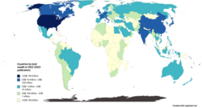

From Wikipedia, the free encyclopedia
 Countries by total wealth, 2022 (2023 publication) National net wealth , also known as national net worth , is the total sum of the value of a country's assets minus its liabilities . It refers to the total value of net wealth possessed by the residents of a state at a set point in time.[ 1] debt and sustain spending and is influenced not only by real estate prices, equity market prices, exchange rates, liabilities and incidence in a country of the population, but also by human resources , natural resources , and capital and technological advancements, which may create new assets or render others worthless in the future.
The most significant component by far among most developed nations is commonly reported as household net wealth or worth, and reflects infrastructure investment. National wealth can fluctuate, as evidenced in the United States after the Great Recession and subsequent economic recovery. During periods when equity markets experience strong growth, the relative national and per capita wealth of the countries where people are more exposed on those markets, such as the United States and United Kingdom, tend to rise. On the other hand, when equity markets are depressed, the relative wealth of the countries where people invest more in real estate and bonds, such as France and Italy, tend to rise instead.
Total household wealth by country [ edit ]
Top 10 countries by total wealth, 2022
Rest of the World (24.4%)
*
List by UBS and Credit Suisse published in 2023 pertaining to total wealth of countries in 2022[ 2]
United States * Northern America Americas 139,866
5.493
China * Eastern Asia Asia 84,485
4.470
Japan * Eastern Asia Asia 22,582
4.918
Germany * Western Europe Europe 17,426
3.797
United Kingdom * Northern Europe Europe 15,972
5.069
France Western Europe Europe 15,727
5.028
India * Southern Asia Asia 15,365
4.392
Canada * Northern America Americas 11,263
4.937
Italy * Southern Europe Europe 11,020
5.669
South Korea * Eastern Asia Asia 9,890
—
Australia * Australia, New Zealand Oceania 9,720
5.157
Spain * Southern Europe Europe 8,487
5.577
Taiwan * Eastern Asia Asia 5,422
—
Netherlands * Western Europe Europe 4,869
4.104
Mexico * Northern America Americas 4,863
2.129
Switzerland * Western Europe Europe 4,829
5.514
Brazil * South America Americas 4,628
1.921
Russia * Eastern Europe Europe 4,386
1.795
Hong Kong * Eastern Asia Asia 3,493
8.384
Indonesia * South-eastern Asia Asia 3,256
1.629
Belgium * Western Europe Europe 3,195
4.116
Iran * Southern Asia Asia 3,034
1.707
Sweden * Northern Europe Europe 2,335
3.860
Saudi Arabia * Western Asia Asia 2,268
1.962
Singapore * South-eastern Asia Asia 1,906
3.712
Denmark * Northern Europe Europe 1,869
3.630
Austria * Western Europe Europe 1,794
4.381
Norway * Northern Europe Europe 1,644
2.717
Poland * Eastern Europe Europe 1,592
2.972
New Zealand * Australia, New Zealand Oceania 1,426
5.181
Thailand * South-eastern Asia Asia 1,421
2.134
Israel * Western Asia Asia 1,368
2.739
Portugal * Southern Europe Europe 1,324
4.598
Egypt * Northern Africa Africa 1,249
2.963
United Arab Emirates * Western Asia Asia 1,242
2.189
Bangladesh * Southern Asia Asia 1,079
2.304
Turkey * Western Asia Asia 1,041
1.780
Vietnam * South-eastern Asia Asia 1,017
3.043
Philippines * South-eastern Asia Asia 1,011
2.501
South Africa * Southern Africa Africa 926
2.191
Ireland * Northern Europe Europe 913
2.447
Greece * Southern Europe Europe 890
4.131
Finland * Northern Europe Europe 792
2.952
Chile * South America Americas 779
2.002
Czech Republic * Eastern Europe Europe 770
2.366
Kazakhstan * Central Asia Asia 720
1.761
Nigeria * West Africa Africa 699
1.475
Ukraine * Eastern Europe Europe 679
2.003
Pakistan * Southern Asia Asia 678
1.671
Malaysia * South-eastern Asia Asia 678
1.870
Romania * Eastern Europe Europe 667
2.671
Colombia * South America Americas 564
1.737
Kuwait * Western Asia Asia 564
3.008
Peru * South America Americas 519
1.662
Hungary * Eastern Europe Europe 458
2.117
Kenya * Eastern Africa Africa 435
2.607
Argentina * South America Americas 420
0.698
Qatar * Western Asia Asia 407
1.865
Sri Lanka * Southern Asia Asia 359
3.535
Algeria * Northern Africa Africa 354
1.473
Morocco * Northern Africa Africa 347
2.548
Lebanon * Western Asia Asia 345
—
Ethiopia * Eastern Africa Africa 300
1.699
Luxembourg * Western Europe Europe 299
2.321
Myanmar * South-eastern Asia Asia 283
4.334
Slovakia * Eastern Europe Europe 270
2.731
Bulgaria * Eastern Europe Europe 258
2.086
Belarus * Eastern Europe Europe 255
1.950
Ecuador * South America Americas 255
1.908
Jordan * Western Asia Asia 235
3.281
Croatia * Southern Europe Europe 230
3.440
Uruguay * South America Americas 217
1.356
Costa Rica * Central America Americas 211
1.926
Oman * Western Asia Asia 189
2.044
Slovenia * Southern Europe Europe 188
3.784
Serbia * Southern Europe Europe 186
3.303
Tunisia * Northern Africa Africa 177
2.887
Azerbaijan * Western Asia Asia 157
1.727
Panama * Central America Americas 150
1.617
Lithuania * Northern Europe Europe 147
2.105
Tanzania * Eastern Africa Africa 145
1.298
Latvia * Northern Europe Europe 141
2.727
Iceland * Northern Europe Europe 129
3.928
Bahrain * Western Asia Asia 116
2.748
Ghana * Western Africa Africa 112
1.628
Cyprus * Western Asia Asia 109
4.289
Bolivia * South America Americas 105
1.907
Nepal * Southern Asia Asia 90
2.219
Bosnia and Herzegovina * Southern Europe Europe 87
3.868
Estonia * Northern Europe Europe 82
1.555
Turkmenistan * Central Asia Asia 78
1.398
Albania * Southern Europe Europe 77
4.581
Zimbabwe * Eastern Africa Africa 71
1.819
DR Congo * Middle Africa Africa 71
—
Nicaragua * Central America Americas 69
2.955
Mauritius * Eastern Africa Africa 68
3.417
Paraguay * South America Americas 68
1.337
Moldova * Eastern Europe Europe 65
3.426
Cambodia * South-eastern Asia Asia 64
1.956
Malta * Southern Europe Europe 58
3.336
Angola * Middle Africa Africa 55
0.552
Trinidad and Tobago * Caribbean Americas 51
1.689
Uganda * Eastern Africa Africa 49
0.853
Armenia * Western Asia Asia 47
3.072
Georgia * Western Asia Asia 46
2.117
Cameroon * Middle Africa Africa 46
0.846
Jamaica * Caribbean Americas 45
2.552
Libya * Northern Africa Africa 44
1.298
Papua New Guinea * Melanesia Oceania 43
1.208
Senegal * Western Africa Africa 41
1.400
Afghanistan * Southern Asia Asia 41
—
Montenegro * Southern Europe Europe 36
4.691
Laos * South-eastern Asia Asia 35
1.486
Namibia * Southern Africa Africa 31
1.941
Madagascar * Eastern Africa Africa 30
1.488
Rwanda * Eastern Africa Africa 28
1.620
Botswana * Southern Africa Africa 27
1.14
Zambia * Eastern Africa Africa 27
0.858
Tajikistan * Central Asia Asia 25
2.218
Kyrgyzstan * Central Asia Asia 25
2.484
Gabon * Middle Africa Africa 23
1.007
Mali * Western Africa Africa 22
0.926
Sudan * Northern Africa Africa 22
0.360
Malawi * Eastern Africa Africa 22
1.565
Equatorial Guinea * Middle Africa Africa 20
1.179
Syria * Western Asia Asia 18
—
Guinea * Western Africa Africa 18
1.139
Bahamas * Caribbean Americas 16
2.125
Burkina Faso * Western Africa Africa 16
0.813
Mozambique * Eastern Africa Africa 16
0.788
Barbados * Caribbean Americas 16
2.688
Mongolia * Eastern Asia Asia 15
0.857
Benin * Western Africa Africa 15
0.834
Liberia * Western Africa Africa 14
1.628
Niger * Western Africa Africa 13
1.637
Brunei * South-eastern Asia Asia 12
2.537
Fiji * Melanesia Oceania 12
0.707
Chad * Middle Africa Africa 10
1.241
Maldives * Southern Asia Asia 10
—
Congo * Middle Africa Africa 6
—
Mauritania * Western Africa Africa 6
0.789
Guyana * South America Americas 6
0.966
Togo * Western Africa Africa 6
0.911
Eritrea * Eastern Africa Africa 5
0.774
Haiti * Caribbean Americas 5
0.349
Seychelles * Eastern Africa Africa 4
2.348
Burundi * Eastern Africa Africa 4
0.996
Sierra Leone * Western Africa Africa 4
0.728
East Timor * South-eastern Asia Asia 4
1.487
Belize * Central America Americas 3
1.064
Gambia * Western Africa Africa 3
1.095
Central African Republic * Middle Africa Africa 2
0.901
Comoros * Eastern Africa Africa 2
1.716
Djibouti * Eastern Africa Africa 2
0.602
Guinea-Bissau * Western Africa Africa 2
1.493
Lesotho * Southern Africa Africa 2
0.842
Suriname * South America Americas 2
0.541
São Tomé and Príncipe * Middle Africa Africa 0
—
Saint Vincent and the Grenadines * Caribbean Americas —
—
—
Vanuatu * Melanesia Oceania —
—
—
North Korea * Eastern Asia Asia —
—
—
Cayman Islands * Caribbean Americas —
—
—
Aruba * Caribbean Americas —
—
—
Cuba * Caribbean Americas —
—
—
Dominica * Caribbean Americas —
—
—
Antigua and Barbuda * Caribbean Americas —
—
—
Tonga * Polynesia Oceania —
—
—
Saint Lucia * Caribbean Americas —
—
—
Grenada * Caribbean Americas —
—
—
Samoa * Polynesia Oceania —
—
—
Solomon Islands * Melanesia Oceania —
—
—
Somalia * Eastern Africa Africa —
—
—
Uzbekistan * Central Asia Asia —
—
—
Countries ranking through time [ edit ] In the following table are ranked the 30 countries by the largest national net wealth from 2000 to 2022 according to UBS and Credit Suisse S.A. (August 2023).[ 4]
The 30 largest countries by net national wealth (in billions USD)
United States 43,423
United States 62,634
United States 64,661
United States 87,959
United States 126,300
United States 139,866
United States 145,793
2021
Japan 19,404
Japan 19,476
Japan 28,640
China 46,535
China 73,866
China 84,485
China 85,947
2021
United Kingdom 6,565
United Kingdom 10,949
China 25,493
Japan 21,519
Japan 26,744
Japan 22,582
Japan 29,718
2011
Germany 6,160
France 9,679
France 13,526
United Kingdom 13,978
Germany 18,053
Germany 17,426
Germany 18,412
2021
Italy 5,522
Italy 9,457
Germany 11,934
Germany 12,009
France 16,326
United Kingdom 15,972
United Kingdom 16,741
2021
France 4,704
Germany 9,073
Italy 11,545
France 11,594
United Kingdom 15,454
France 15,727
France 16,326
2020
China 3,704
China 8,522
United Kingdom 11,199
Italy 10,506
India 12,688
India 15,365
India 15,365
2022
Canada 2,613
Spain 6,905
Spain 8,701
India 8,948
Italy 12,176
Canada 11,263
Italy 12,820
2007
Spain 2,497
Canada 4,363
Canada 6,832
Canada 6,930
Canada 10,586
Italy 11,020
Canada 12,501
2021
South Korea 1,721
South Korea 3,508
India 6,810
Australia 6,424
South Korea 9,625
South Korea 9,890
Australia 10,734
2021
Netherlands 1,591
Australia 3,480
Australia 6,662
Spain 6,177
Australia 9,268
Australia 9,720
Spain 10,296
2007
India 1,553
India 3,266
South Korea 4,744
South Korea 6,128
Spain 8,759
Spain 8,487
South Korea 9,946
2021
Australia 1,500
Netherlands 2,524
Netherlands 3,323
Taiwan 3,514
Netherlands 5,447
Taiwan 5,422
Taiwan 5,776
2021
Taiwan 1,437
Taiwan 1,883
Brazil 3,128
Switzerland 3,428
Taiwan 4,920
Netherlands 4,869
Netherlands 5,447
2020
Switzerland 1,273
Belgium 1,826
Switzerland 2,892
Netherlands 3,255
Switzerland 4,673
Mexico 4,863
Switzerland 4,893
2021
Belgium 1,110
Switzerland 1,737
Taiwan 2,628
Mexico 2,659
Mexico 3,767
Switzerland 4,829
Mexico 4,863
2022
Hong Kong 871
Mexico 1,563
Belgium 2,565
Hong Kong 2,548
Belgium 3,544
Brazil 4,628
Brazil 4,628
2022
Mexico 828
Austria 1,067
Mexico 2,261
Belgium 2,531
Hong Kong 3,446
Russia 4,386
Russia 4,386
2022
Austria 719
Brazil 1,064
Russia 2,165
Brazil 2,398
Russia 3,177
Hong Kong 3,493
Belgium 3,544
2020
Brazil 646
Turkey 1,034
Turkey 1,718
Indonesia 1,899
Brazil 3,092
Indonesia 3,256
Hong Kong 3,495
2021
Greece 618
Greece 1,020
Sweden 1,628
Russia 1,824
Indonesia 3,087
Belgium 3,195
Indonesia 3,256
2022
Turkey 525
Hong Kong 976
Hong Kong 1,588
Sweden 1,783
Sweden 2,742
Iran 3,034
Iran 3,034
2022
Sweden 522
Sweden 966
Austria 1,460
Turkey 1,777
Saudi Arabia 1,905
Sweden 2,335
Sweden 2,865
2021
Denmark 451
Russia 869
Indonesia 1,359
Saudi Arabia 1,437
Austria 1,855
Saudi Arabia 2,268
Saudi Arabia 2,268
2022
Portugal 422
Denmark 799
Greece 1,252
Austria 1,408
Denmark 1,793
Singapore 1,906
Denmark 1,998
2021
Saudi Arabia 415
Portugal 731
Denmark 1,022
Singapore 1,075
Singapore 1,637
Denmark 1,869
Turkey 1,970
2013
Indonesia 364
Indonesia 704
Norway 988
Denmark 1,055
Turkey 1,509
Austria 1,794
Singapore 1,906
2022
Ireland 336
Ireland 696
Portugal 958
Egypt 1,035
Poland 1,465
Norway 1,644
Austria 1,855
2020
Norway 336
Poland 622
Poland 936
Thailand 1,000
Iran 1,443
Poland 1,592
New Zealand 1,658
2021
Singapore 324
Saudi Arabia 620
Thailand 926
Poland 993
New Zealand 1,436
New Zealand 1,426
Norway 1,644
2022
Shares of global wealth [ edit ] The following table indicates the share of global wealth of the ten wealthiest countries by net national wealth at given years. The share of global wealth of a country that is 5% or greater at a given year is in bold.
Shares of global wealth (%) of the ten wealthiest countries by net national wealth for 2000–09
Year
Australia Canada China France Germany India Italy Japan South Korea Spain United Kingdom United States Aggregate
2000
—
2.2%
3.1%
4.0%
5.2% —
4.7%
16.5% 1.5%
2.1%
5.6% 36.9% 81.8%
2001
—
2.1%
3.6%
4.0%
5.2% —
4.6%
14.1% 1.5%
2.3%
5.6% 38.8% 81.8%
2002
—
2.0%
3.7%
4.6%
5.5% —
5.3% 13.8% 1.7%
2.9%
6.1% 35.1% 80.7%
2003
1.9%
2.2%
3.7%
5.2% 5.8% —
5.7% 12.9% —
3.5%
6.2% 32.8% 79.9%
2004
1.9%
2.2%
3.9%
5.6% 5.7% —
5.7% 11.5% —
3.9%
6.5% 32.5% 79.4%
2005
—
2.4%
4.7%
5.3% 5.0% —
5.2% 10.7% 1.9%
3.8%
6.0% 34.4% 79.4%
2006
2.0%
2.3%
5.0% 5.8% 5.0% —
5.5% 9.5% —
4.2%
6.4% 32.3% 78.0%
2007
2.3%
2.6%
6.0% 6.1% 5.3% —
5.5% 8.6% —
4.4%
6.2% 29.3% 76.3%
2008
—
2.2%
8.2% 6.0% 5.4% 2.2%
5.6% 11.2% —
4.4%
4.4%
27.5% 77.1%
2009
2.4%
2.6%
8.6% 5.7% 5.3% —
5.4% 10.2% —
4.1%
4.8%
26.3% 75.4%
Shares of global wealth (%) of the ten wealthiest countries by net national wealth for 2010–19
Year
Australia Canada China France Germany India Italy Japan South Korea Spain United Kingdom United States Aggregate
2010
—
2.7%
10.1% 5.4% 4.7%
2.7%
4.6%
11.4% —
3.5%
4.4%
25.7% 75.2%
2011
—
2.7%
11.9% 5.1% 4.6%
2.5%
4.3%
11.4% —
3.4%
4.5%
25.2% 75.6%
2012
—
2.8%
12.5% 4.8%
4.6%
2.7%
4.2%
9.8% —
2.9%
4.4%
25.6% 74.3%
2013
—
2.7%
13.8% 4.8%
4.7%
2.6%
4.1%
7.8% —
2.7%
4.5%
26.8% 74.5%
2014
2.2%
2.6%
15.1% 4.2%
4.3%
2.8%
3.9%
7.1% —
—
4.7%
28.6% 75.5%
2015
2.2%
2.3%
15.6% 3.9%
4.0%
3.0%
3.5%
7.2% —
—
4.7%
29.5% 75.9%
2016
2.2%
2.5%
16.7% 3.8%
3.9%
3.2%
3.3%
7.2% —
—
4.0%
29.9% 76.7%
2017
2.2%
2.4%
17.4% 3.9%
4.1%
3.3%
3.3%
6.7% —
—
4.1%
28.4% 75.8%
2018
—
2.2%
18.4% 3.8%
4.1%
3.4%
3.0%
6.7% 2.2%
—
3.7%
28.5% 76.0%
2019
—
2.3%
18.1% 3.6%
4.0%
3.4%
2.8%
6.5% 2.1%
—
3.6%
29.6% 76.0%
,_Credit_Suisse.png){kind=link}
{kind=link}